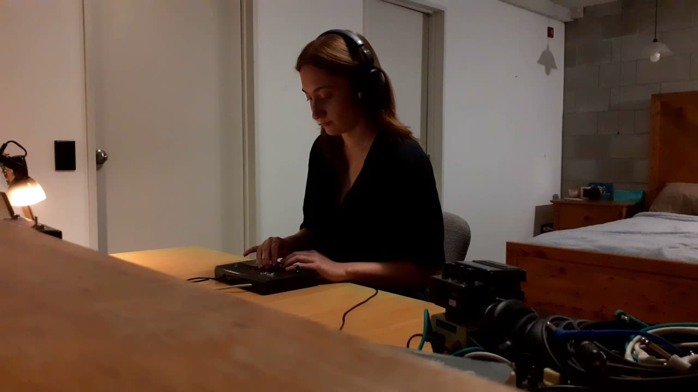

glitchcraft
glitchcraft
Author(s)
Jessica Robinson (Waipapa Taumata Rau / University of Auckland)
PubPub Link
https://nime.pubpub.org/pub/0o6uflfa/draft?access=kjqesq3a
Abstract
Inspired by previous decades of cyberfeminist thought [1], Legacy Russell’s 2020 Glitch Feminism: A Manifesto [2] posits that “one must innovate, encode, engineer the error into the machine [...] prompting its failure as a radical act”. In direct opposition to techno-solutionism [3], glitch feminism “celebrate[s] failure as a generative force”. This work applies this concept to a DMI context by designing an unpredictable, ‘glitchy’ instrument causing the relationship between player and instrument to be in flux during performance. This unpredictability aims to foster all four of Don Ihde’s [4] human-technology-world relations while playing (background, alterity, hermeneutic and embodiment).
The instrument was designed running SuperCollider on a Bela Mini, connected to a distance sensor (with Arduino), touch sensor and buttons. It functions as a looper and sampler, where randomly occurring glitch events can be recorded and played back. Thus, the glitch is used as a generative event that prompts the player to react. The playback is processed by unknown and changing effects, reflecting the principles behind the glitch art technique of databending [5]. In databending, coded representations of images (or other files) are altered with unknown visual consequences, using an unexpected human-computer interaction to generate an unpredictable yet purposeful result. In the same way, the player cannot predict which effect they will be controlling, yet they are the catalyst of the manipulation.
Requirements
glitchcraft is designed as a composed instrument having a fixed performance structure with the possibility of adding new sonic materials and parameters. Currently the instrument requires two USB connections to a laptop for the Bela and Arduino, and uses the Bela’s 3.5mm stereo headphone jack.
Program Description
glitchcraft is an improvisatory piece, where the performer can choose which sounds they attempt to loop or sample in order to build layers of glitchy sonic material. The loops and sample-playback are processed by changing unpredictable effects, and new ‘glitch’ sounds are randomly triggered, prompting the performer to react to these changes to develop the texture.
Media

▶Acknowledgements
I would like to thank Fabio Morreale for the assistance with this research, and Fern Bravo and Nirvana Haldar for their help with the video.
This instrument was designed as part of the University of Auckland Creative Arts and Industries Summer Research Program.
Citations
Haraway, D. J. (1991). A Cyborg Manifesto: Science, Technology, and Socialist-Feminism in the Late Twentieth Century. Simians, Cyborgs and Women: The Reinvention of Nature. Routledge. ISBN 0415903866.
↩Russell, L. (2020). Glitch Feminism : A Manifesto. ProQuest Ebook Central, https://ebookcentral.proquest.com/lib/auckland/detail.action?docID=6297948.
↩Morreale, F., Bin, S. M. A.,, McPherson, A., Stapleton, P., & Wanderley, M. (2020). A NIME Of The Times: Developing an Outward-Looking Political Agenda For This Community. Proceedings of the International Conference on New Interfaces for Musical Expression, Birmingham City University, pp. 160–165. http://doi.org/10.5281/zenodo.4813294
↩Ihde, D. (2012). Experimental Phenomenology, Second Edition : Multistabilities. State University of New York Press.
↩Boyle, C. (2015). The Rhetorical Question Concerning Glitch. Computers and Composition, 35, 12-29. https://doi.org/10.1016/j.compcom.2015.01.003
↩